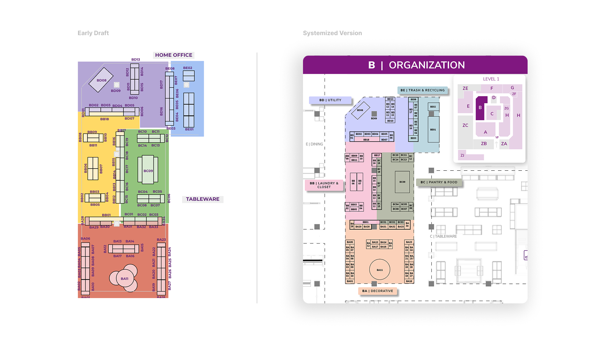
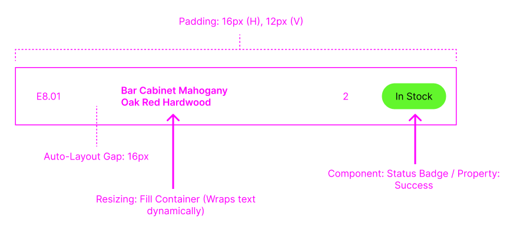

Wayfair · UX & Systems Designer · 2023
Wayfair: Operational Mapping System
Building a multi-surface design system for a 150,000 sq. ft. flagship launch under real operational constraints.

Learning how the store actually worked
Before designing anything, I spent time on the floor observing how associates actually moved through the space during real operational tasks. What I found wasn't a map problem — it was a mental model problem.
Every existing map faced a different direction. Associates would pick one up, scan it, then spend several seconds physically rotating it to match their position in the store. During a high-pressure launch with hundreds of placements to execute, those seconds added up to real errors and real delays.
That single observation became the design foundation for everything that followed: every map in the new system would be locked to the perspective of someone walking in from the main entrance — the way associates actually entered and moved through the space.
Shipping what works (Google Slides)
With no engineering bandwidth before launch, I needed a system that could be deployed immediately and updated by non-technical teams. Instead of waiting, I built a scalable mapping system using Google Slides and overhauled the maps to include landmark context like surrounding departments.
To make the maps scalable, I established three core system rules:
Together, these rules made the system fast to update, easy to understand, and reliable under constant change. Most importantly, I locked the visual orientation of every map to match the exact perspective an associate has when walking in from the main entrance — eliminating the reorientation friction that was costing time and causing errors under pressure.

Building the future vision
Once the immediate system was stable, my manager asked me to draft a mobile app concept to pitch to leadership — a vision for what a native tool could unlock beyond static maps.
The design decisions came directly from what I'd observed on the floor. Associates were constantly cross-referencing between the map and a separate inventory document to verify what belonged in each zone. That two-document workflow was the friction point. So the prototype collapsed it into one: tapping a zone surfaces live inventory for that exact location, with color-coded status badges showing stock levels at a glance.
The goal wasn't to build something polished. It was to make the operational case concrete enough for leadership to understand what a connected tool would actually change about how the team works. The prototype shifted the conversation from "how do we maintain better maps" to "how do we build a connected operational system."

Designing for real-world data & handoff
To make this system scalable beyond static maps, I designed the interface to behave predictably under real data conditions and support clean engineering handoff. To cover 150,000 square feet, the UI had to be modular, built using structured layout rules so that variable data like product names, quantities, and statuses could scale without breaking the UI.
This made it easier for engineering to map real inventory data into the system without introducing inconsistencies.

A stopgap that became the standard
By focusing on how the store team actually worked rather than just making a pretty map, we established a primary navigation and execution system for the grand opening. What started as a stopgap solution became the foundation for how the team navigates and executes in-store. Associates no longer had to stop and orient themselves.
The tool matched how associates moved through the store, allowing them to focus on execution instead of navigation. The system scaled beyond launch and into ongoing operations.
What I'd do differently
The biggest constraint on this project wasn't design. It was tool access and time. Building the system in InDesign first, then migrating it back to Google Slides under launch pressure, meant some of the design system's fidelity got lost in translation. If I were starting today, I'd push earlier for alignment on the final delivery format before investing in a tool that leadership would later require us to move away from.
I'd also formalize the research phase earlier. The on-site observations I made were valuable, but they happened organically rather than as a structured process. A brief structured research sprint at the start, even just a few hours of shadowing associates, would have surfaced the spatial context gaps faster and given me a clearer brief to design against from day one.
That said, shipping a system that held up under real operational pressure, across multiple surfaces, during a live flagship launch, is something I'm proud of. The maps worked when it mattered.